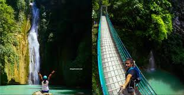

Mantayupan Falls, Cebu
Mantayupan Falls: A Hidden Gem in Cebu
Mantayupan Falls* is located in the municipality of Barili, a quiet town in the southern part of Cebu. Renowned for its natural beauty, the falls are one of Cebu’s best-kept secrets, offering an experience that blends the tranquility of nature with a touch of adventure. The falls are easily accessible, with a scenic road that leads visitors to the base of the waterfall, making it a perfect destination for both seasoned adventurers and those looking for a peaceful getaway.
The two-tiered waterfall is the main attraction. The upper level features a stunning 14-meter drop, where water flows powerfully from the heights above, creating a refreshing mist that cools the air below. The lower level is a smaller but equally enchanting cascade, where visitors can take a swim in the cool, crystal-clear pools. Surrounded by dense trees and vibrant plant life, Mantayupan Falls is an ideal spot for photography, hiking, and relaxation.
For those who enjoy a bit of adventure, there are trekking trails that wind through the lush forest surrounding the falls. These trails provide breathtaking views of the landscape, as well as an opportunity to witness the local flora and fauna. The sound of the cascading water and the peaceful environment make it a perfect retreat for anyone looking to reconnect with nature.
---
Highlights of Mantayupan Falls:
1. *Stunning Waterfall*: The main highlight of Mantayupan Falls is its impressive two-tiered cascade. The first tier is a spectacular 14-meter drop that plunges into a crystal-clear pool, while the second tier features a more gentle flow surrounded by natural rock formations.
2. *Refreshing Swimming Pools*: Visitors can take a refreshing dip in the natural pools formed at the base of the waterfall. The cool waters are inviting, offering a relaxing experience for swimmers of all ages.
3. *Scenic Hiking Trails*: The surrounding area offers trekking trails that provide great opportunities for nature walks. Hikers can explore the lush jungle, observe the local wildlife, and enjoy stunning views of the waterfall and the landscape.
4. *Peaceful Atmosphere*: Mantayupan Falls is relatively less crowded compared to other tourist spots in Cebu, making it an ideal place for those seeking a quiet, peaceful retreat in nature.
5. *Photographic Beauty*: The stunning vistas of the waterfall, the surrounding forest, and the crystal-clear pools offer perfect opportunities for photographers to capture the raw beauty of nature.
6. *Cultural Connection*: Like many of Cebu's natural wonders, Mantayupan Falls is deeply embedded in local culture and folklore, adding an element of mystique to the already enchanting location.
7. *Accessibility*: Mantayupan Falls is easily accessible by road, with a short walk or trek to reach the base of the falls. The location is family-friendly, making it a great destination for visitors of all ages.
Mantayupan Falls offers a breathtaking experience that combines adventure with relaxation. Whether you're seeking an adrenaline rush through the nearby trails or simply wish to soak in the beauty of the falls, it promises a memorable visit for all who venture there.